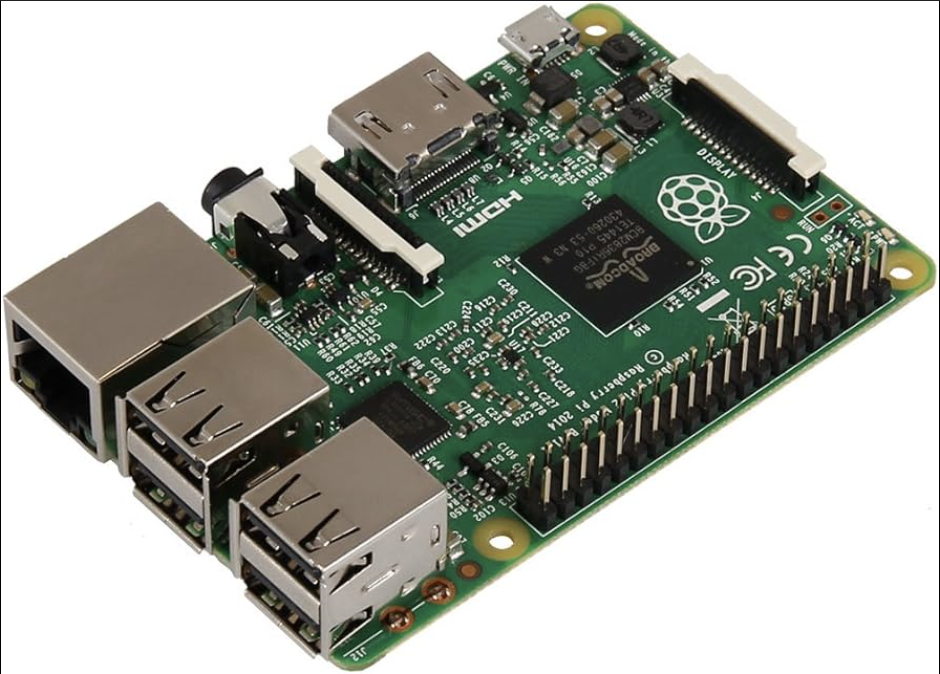
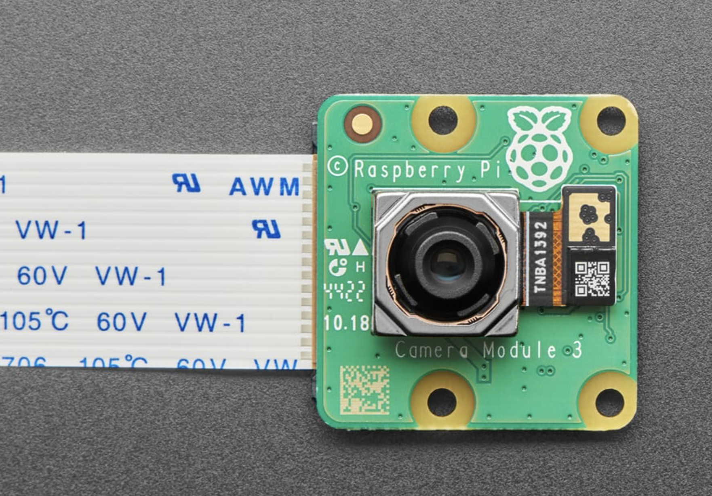
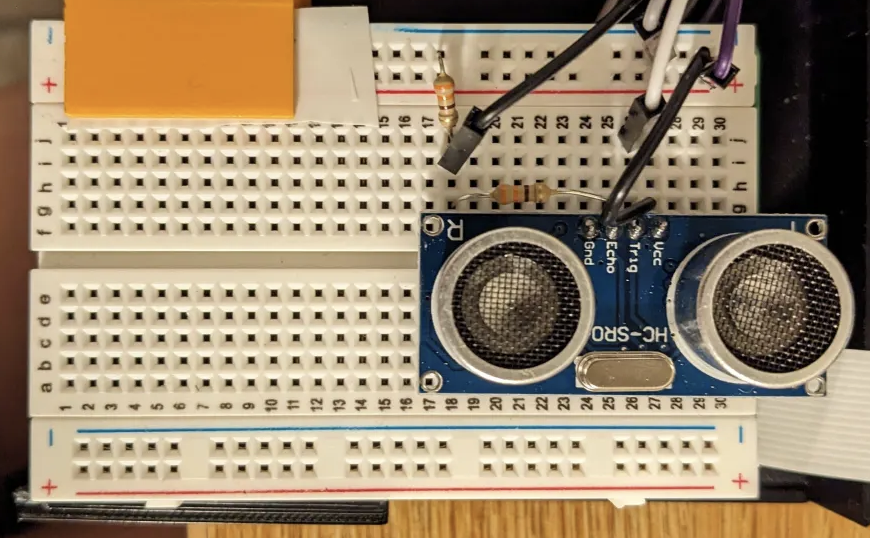
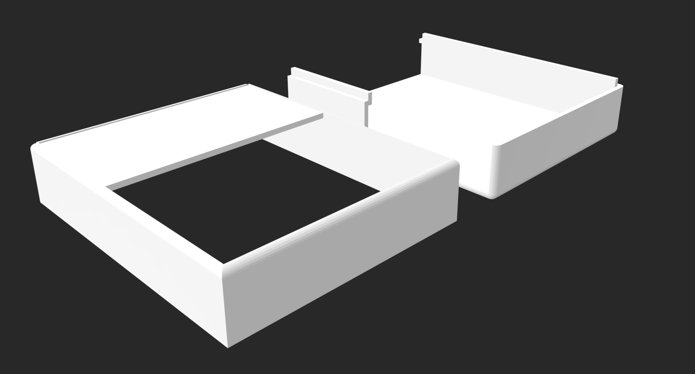
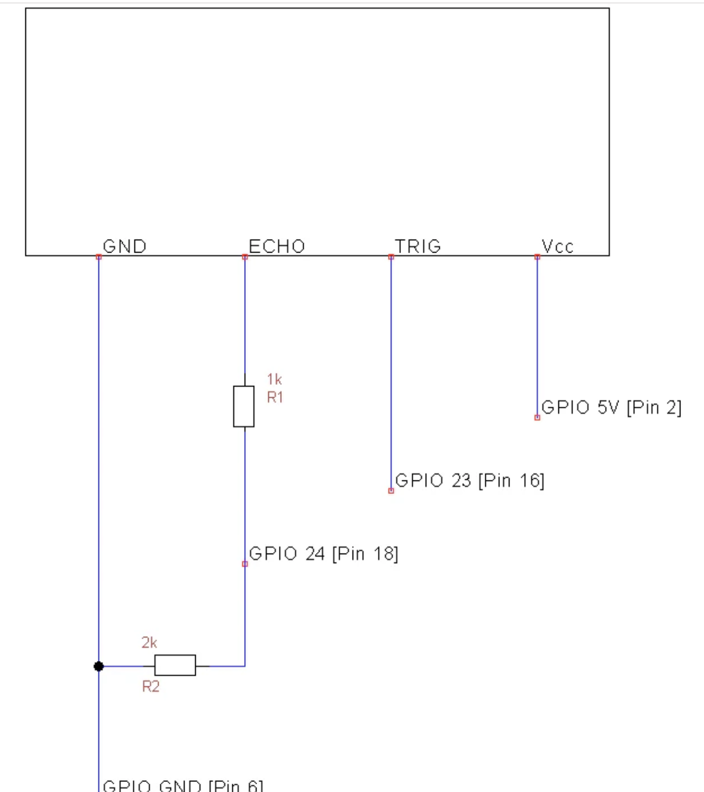
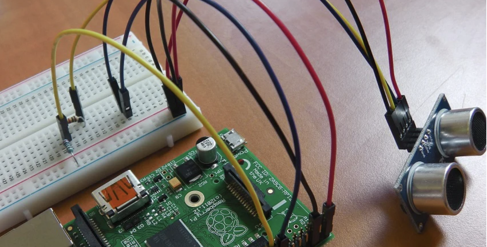

The Problem
People with amnesia often struggle to recognize familiar faces, which can lead to difficulties in identifying friends, family, or regular visitors at their home. This inability can severely disrupt their social interactions and compromise their safety.
Testable Hypothesis
Users who experience amnesia who use our facial recognition door camera experience a higher level of confidence when answering the door as opposed to without one.
Measurement:
Noting the ability of our algorithm in combination with the camera module to recognize and classify people.
Our Solution
We want to integrate a face recognition component to a ring doorbell which will help people with amnesia identify their visitors.
This is how our facial-recognition doorcamera will work:
- First we take a short 4-5 second video of the subject's face and send it to our telegram bot
- User is asked to name the person in the video to train the neural network
- When the camera of the doorbell is turned on it checks if the subject is close enough
- If the subject is close enough and is recognised, it sends a message on telegram.
Components
Hardware
RaspberryPi- microprocessor
Camera Module
Proximity Center
Enclosure
Ultrasonic Range Sensor Setup
Help for setup 1. Plugged four of our male to female jumper wires into the pins on the HC-SR04
2. Plugged Vcc into the positive rail of your breadboard, and plug GND into your negative rail.
3. Plugged GPIO 5V [Pin 2] into the positive rail, and GPIO GND [Pin 6] into the negative rail.
4. Plugged TRIG into a blank rail, and plugged that rail into GPIO 23 [Pin 16].
5. Plugged ECHO into a blank rail, linked another blank rail using R1 (1kΩ resistor)
6. Linked our R1 rail with the GND rail using R2 (2kΩ resistor). Leave a space between the two resistors.
7. Added GPIO 24 [Pin 18] to the rail with your R1 (1kΩ resistor).
This is how we connected it to the camera and implemented it with our telegram bot:
#GPIO Mode (BOARD / BCM)
GPIO.setmode(GPIO.BCM)
#set GPIO Pins
GPIO_TRIGGER = 18
GPIO_ECHO = 24
#set GPIO direction (IN / OUT)
GPIO.setup(GPIO_TRIGGER, GPIO.OUT)
GPIO.setup(GPIO_ECHO, GPIO.IN)
def distance():
# set Trigger to HIGH
GPIO.output(GPIO_TRIGGER, True)
# set Trigger after 0.01ms to LOW
time.sleep(0.00001)
GPIO.output(GPIO_TRIGGER, False)
StartTime = time.time()
StopTime = time.time()
# save StartTime
while GPIO.input(GPIO_ECHO) == 0:
StartTime = time.time()
# save time of arrival
while GPIO.input(GPIO_ECHO) == 1:
StopTime = time.time()
# time difference between start and arrival
TimeElapsed = StopTime - StartTime
# multiply with the sonic speed (34300 cm/s)
# and divide by 2, because there and back
distance = (TimeElapsed * 34300) / 2
return distance
Software
Telegram Bot
The telegram bot was set up on python using the token of the Facial Recognition Bot that we created on the Telegram app and we added the following commands
Start Command
Starts the bot
async def start_command(update: Update, context: ContextTypes.DEFAULT_TYPE):
await update.message.reply_text('Hello! We are here to help you to identify visitors at your doorstep.')
Open Cam command
Opens the camera. In order to send a message to the user to notify them who is at the door, we implemented a job queue, which periodically checks in the background if there's any message that needs to be sent back to the user
async def open_cam(update: Update, context: ContextTypes.DEFAULT_TYPE):
global camera_process, flag, message_queue
flag.value = False
camera_process = multiprocessing.Process(target=camera_loop, args=(flag, message_queue))
camera_process.start()
await update.message.reply_text(f'Camera on. Send `/stop_cam` to stop.')
# Start a background task to check for messages in the queue
context.job_queue.run_repeating(check_queue, interval=1, first=0, data=update)
Stop Cam command
closes the camera
async def stop_cam(update: Update, context: ContextTypes.DEFAULT_TYPE):
global camera_process, flag
flag.value = True
#camera_process.join()
while camera_process.is_alive():
await asyncio.sleep(0.1)
await update.message.reply_text('Stopping camera...')
Add Face command
Prompts the user to send a video of a face that they want to add into the system, which will then be broken down into about 10 images and start model training.
async def add_face(update: Update, context: ContextTypes.DEFAULT_TYPE):
await update.message.reply_text('Please send me the name of the person.')
return NAME
async def video(update: Update, context: ContextTypes.DEFAULT_TYPE):
try:
video_file = await update.message.video.get_file()
name = context.user_data['name']
user_id = update.message.from_user.id
video_path = f"{user_id}_{name}.mp4"
await video_file.download_to_drive(video_path)
#make directory for images
output_dir = os.path.join('dataset', name)
os.makedirs(output_dir, exist_ok=True)
vidcap = cv2.VideoCapture(video_path)
success,image = vidcap.read()
count = 0
# number of frames to skip
numFrameToSave = 12
frame_cnt = 0
while success: # check success here might break your program
success,image = vidcap.read() #success might be false and image might be None
#check success here
if not success:
break
# on every numFrameToSave
if (count % numFrameToSave ==0):
frame_path = os.path.join(output_dir, "%s_%d" % (name, frame_cnt))
#write the regular img
cv2.imwrite(frame_path+".jpg", image)
og_image = cv2.imread(frame_path+".jpg")
frame_cnt += 1
if cv2.waitKey(10) == 27:
break
count += 1
# Add to the dictionary:
# recognized_faces[name] = video_path
Remove Face command
Removes a face in the system. It will remove their image folder in the dataset, as well as their face encodings in the pickle file.
async def remove_face(update: Update, context: ContextTypes.DEFAULT_TYPE):
await update.message.reply_text('Please send me the name of the person to remove.')
return REMOVE_NAME
async def remove_name(update: Update, context: ContextTypes.DEFAULT_TYPE):
name = update.message.text
user_id = update.message.from_user.id
try:
# Load existing encodings and names
encodings_path = 'encodings.pickle'
knownEncodings, knownNames = load_encodings(encodings_path)
# Find indices of the entries to be removed
indices_to_remove = [i for i, known_name in enumerate(knownNames) if known_name == name]
# Remove the entries
knownEncodings = [encoding for i, encoding in enumerate(knownEncodings) if i not in indices_to_remove]
knownNames = [known_name for i, known_name in enumerate(knownNames) if i not in indices_to_remove]
# Save the updated encodings and names back to the file
save_encodings(encodings_path, knownEncodings, knownNames)
# Remove the directory containing the images
dataset_dir = os.path.join('dataset', name)
if os.path.exists(dataset_dir):
import shutil
shutil.rmtree(dataset_dir)
await update.message.reply_text(f"Face of '{name}' removed successfully!")
except Exception as e:
await update.message.reply_text(f"Error removing face: {e}")
return ConversationHandler.END
List Faces command
List all the names of the encoded faces from the pickle file
async def list_faces(update: Update, context: ContextTypes.DEFAULT_TYPE):
encodings_path = 'encodings.pickle'
knownEncodings, knownNames = load_encodings(encodings_path)
if knownNames: # Check if any faces are registered
face_list = "\n".join(f"- {name}" for name in set(knownNames))
await update.message.reply_text(f"Recognized faces:\n{face_list}")
else:
await update.message.reply_text("No faces registered yet.")
Help command
Provides a list of all commands
async def help_command(update: Update, context: ContextTypes.DEFAULT_TYPE):
help_text = """
Here are the available commands:
/add_face - Register a new face.
/remove_face - Remove a registered face.
/list_faces - View all registered faces.
/open_cam - open the camera.
/stop_cam - stop the camera.
/help - Show this help message.
"""
await update.message.reply_text(help_text)
Model Training
Open source: model training
imagePaths = list(paths.list_images(f"dataset/{name}"))
# initialize the list of known encodings and known names
# knownEncodings = []
# knownNames = []
# Load existing encodings
encodings_path = "encodings.pickle"
knownEncodings, knownNames = load_encodings(encodings_path)
# loop over the image paths
for (i, imagePath) in enumerate(imagePaths):
# extract the person name from the image path
print("[INFO] processing image {}/{}".format(i + 1,
len(imagePaths)))
name = imagePath.split(os.path.sep)[-2]
# load the input image and convert it from RGB (OpenCV ordering)
# to dlib ordering (RGB)
image = cv2.imread(imagePath)
rgb = cv2.cvtColor(image, cv2.COLOR_BGR2RGB)
# detect the (x, y)-coordinates of the bounding boxes
# corresponding to each face in the input image
boxes = face_recognition.face_locations(rgb,
model="hog")
# compute the facial embedding for the face
encodings = face_recognition.face_encodings(rgb, boxes)
# loop over the encodings
for encoding in encodings:
# add each encoding + name to our set of known names and
# encodings
knownEncodings.append(encoding)
knownNames.append(name)
# dump the facial encodings + names to disk
print("[INFO] serializing encodings...")
'''
data = {"encodings": knownEncodings, "names": knownNames}
f = open(f"encodings.pickle.{name}", "wb")
f.write(pickle.dumps(data))
f.close()
'''
save_encodings(encodings_path, knownEncodings, knownNames)
Main
Starts the bot and has all command calls
if __name__ == '__main__':
print('Starting bot...')
app = Application.builder().token(TOKEN).build()
add_face_handler = ConversationHandler(
entry_points=[CommandHandler('add_face', add_face)],
states={
NAME: [MessageHandler(filters.TEXT & ~filters.COMMAND, name)],
VIDEO: [MessageHandler(filters.VIDEO, video)],
},
fallbacks=[CommandHandler('cancel', cancel)],
)
remove_face_handler = ConversationHandler(
entry_points=[CommandHandler('remove_face', remove_face)],
states={
REMOVE_NAME: [MessageHandler(filters.TEXT & ~filters.COMMAND, remove_name)]
},
fallbacks=[]
)
app.add_handler(add_face_handler)
app.add_handler(remove_face_handler)
app.add_handler(CommandHandler('open_cam', open_cam))
app.add_handler(CommandHandler('stop_cam', stop_cam))
app.add_handler(CommandHandler('start', start_command))
app.add_handler(CommandHandler('help', help_command))
app.add_handler(CommandHandler('list_faces', list_faces))
app.run_polling()
Website
We used HTML and CSS to design our website